user edits name and birth date with the current password chromium
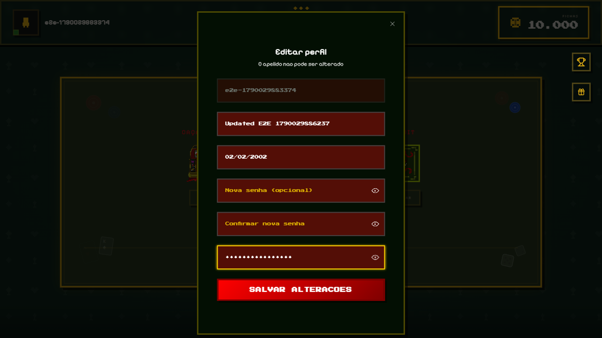
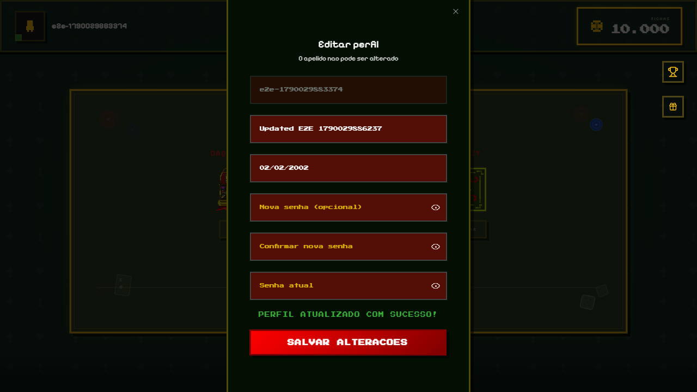
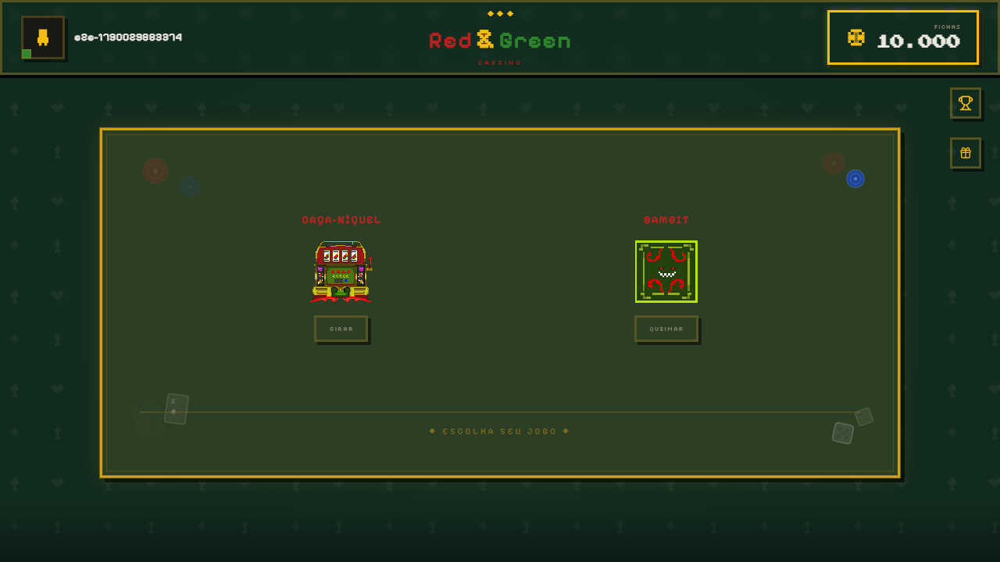
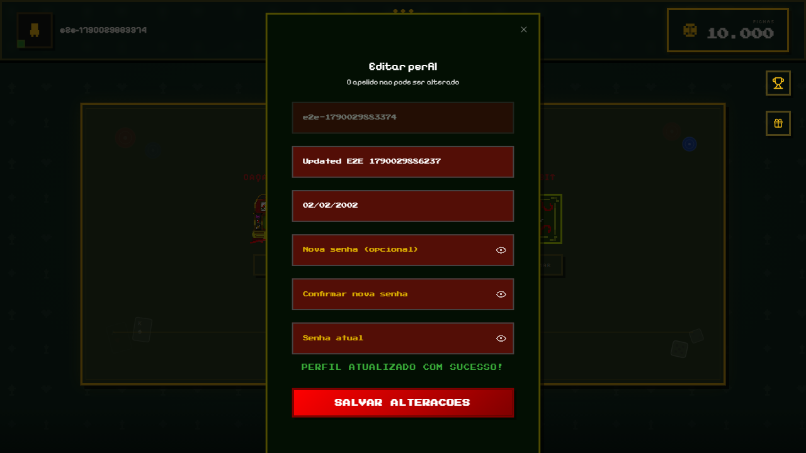
TC-010 - Happy Path
e2e/TC-010.spec.ts| Caso | Navegador | Resultado | Tentativas | Duracao |
|---|---|---|---|---|
| user edits name and birth date with the current password | chromium | Aprovado | 1 | 7.5s |
| user edits name and birth date with the current password | firefox | Aprovado | 1 | 7.9s |
| user edits name and birth date with the current password | webkit | Aprovado | 1 | 11.0s |




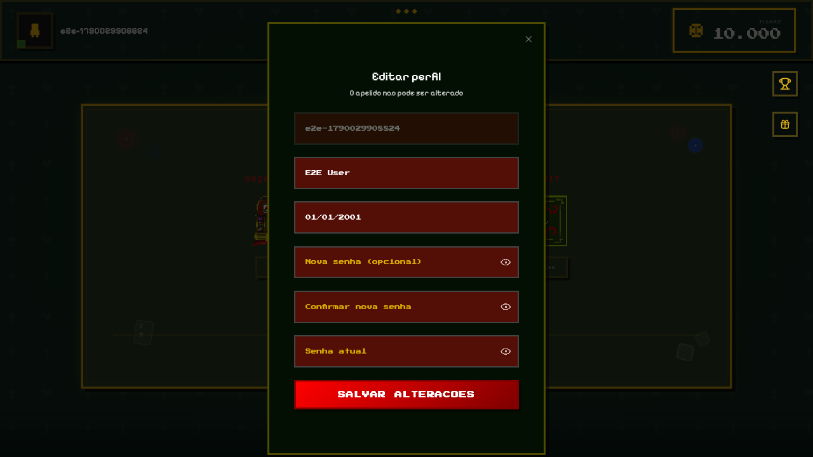
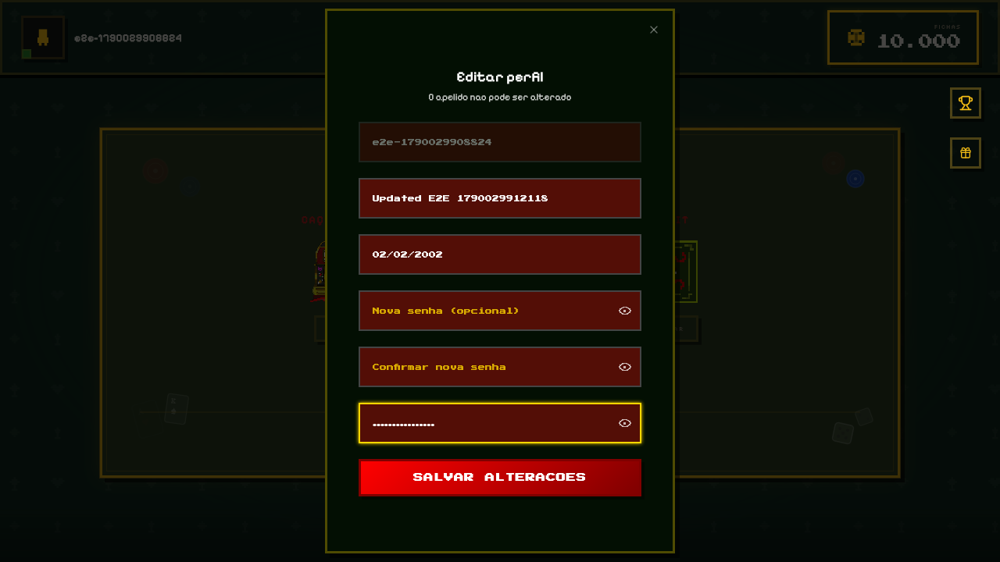
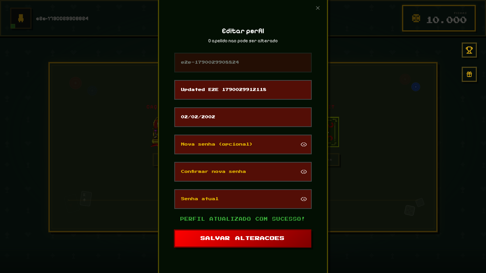
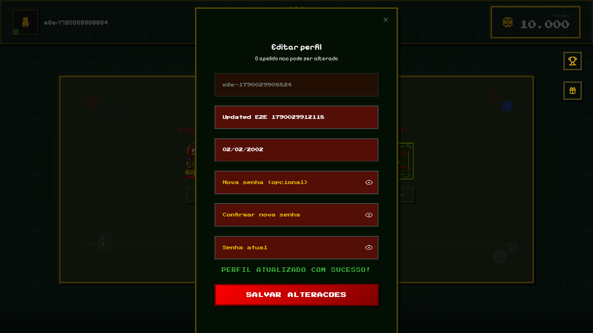
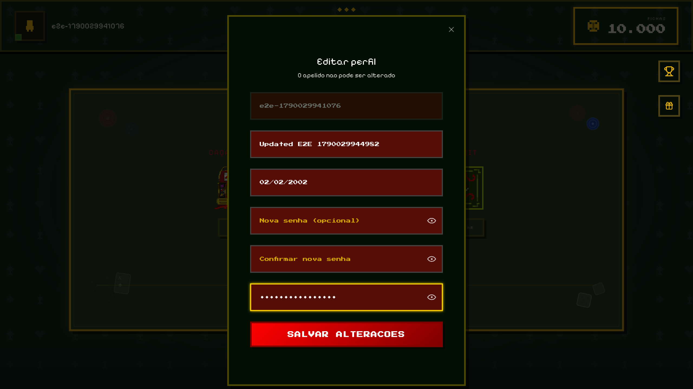
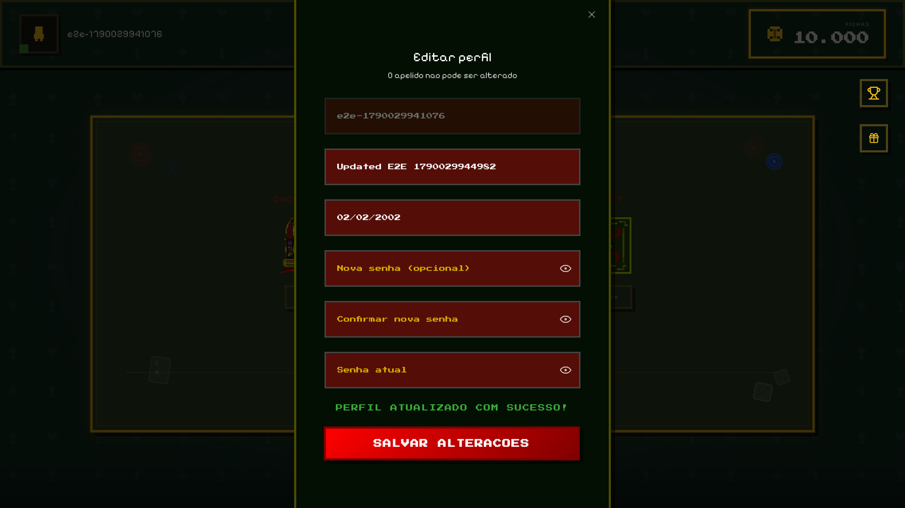
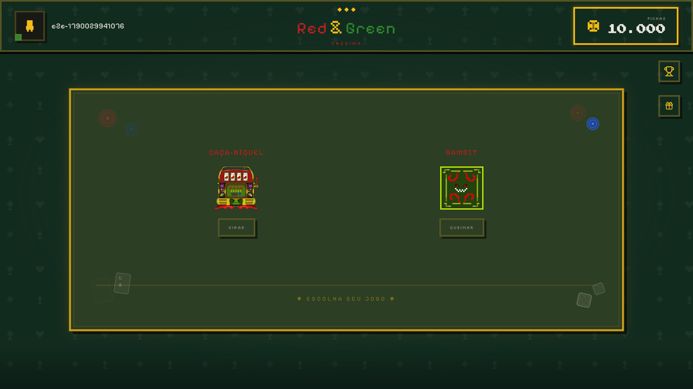
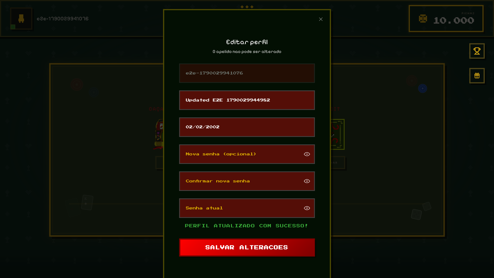